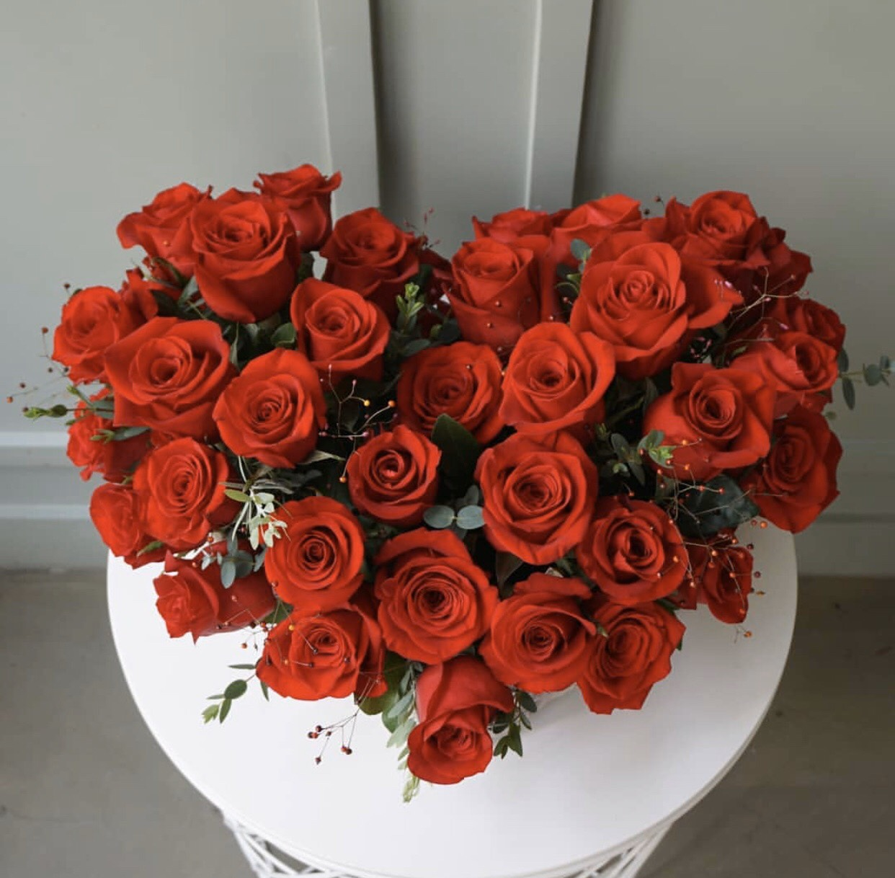

HOA HỒNG
- Lịch sử
Từ thời tiền sử cổ đại, sự xuất hiện của hoa hồng được nhiều người trên khắp thế giới đón nhận và đã dành một vị trí đặt biệt cho loài hoa này. Không chỉ hiện diện ở những khu vườn mộc mạc mà còn xuất hiện trong nghệ thuật, văn chương và âm nhạc ngày càng nhiều.

Cây có nguồn gốc từ vùng Trung Á, Bắc Mỹ, Châu Âu cách 60 khoảng 70 triệu năm trước rồi lan đến Bắc Bán Cầu. Người Trung Quốc, Hy Lạp đến người Ai Cập, La Mã đều đều đánh giá cao về loài này một cách hoa rộng khắp từ cách đây 5000 năm.
- Tổng quát
Hoa hồng có tên khoa học là Rosa sp, họ Rosaceae. Hiện nay với hơn 200 loại hoa hồng khác nhau. Được biết có một giống hoa hồng lâu đời nhất thế giới tên là Rosa gallica, còn gọi là hoa hồng Pháp. Nó trổ hoa khắp vùng Trung, Châu Âu, Tây Nam Á và nhiều vùng khác trên thế giới. Cây được xem là biểu tượng của tình yêu chung thuỷ, son sắc thời đại.
Vài nét về đặc điểm hình thái cây hoa hồng:
Là cây thân bụi thẳng đứng hoặc mọc leo, có các nhánh nhỏ mọc ra từ thân chính. Cả thân chính và nhánh nhỏ đều bị bao phủ bằng một lớp gai. Tuỳ loại giống thì số lượng gai nhiều ít khác nhau. Lá thuộc lá kép lông chim lẻ. Hoa nhiều cánh có mùi thơm đặc trưng, màu sắc đa dạng đủ các màu: xanh, đỏ, tím, vàng, tráng, đen, cam…

- Phân loại hoa hồng
Người ta phân theo hình dạng và phân theo xếp loại của loài hoa.
- Phân theo hình dạng
- Dạng leo: Thường là những nhánh nhỏ của cây mọc leo từ 1.8 đến 6m, được uốn cho leo tường, leo giàn và hàng rào, những thân nhỏ nên uốn ngang để cho hoa nở nhiều hơn.
- Dạng bán leo: Cây chỉ cao tối đa 1-1.2m thích hợp để trồng chậu, trồng ban công, sân thượng.
- Dạng bụi: Là loại cây nhỏ, mọc từng chùm cao tối đa 40-60cm, được trồng hàng rào hay trồng chậu trưng bày không gian nội thất.
- Dạng nhỏ trồng phủ đất: Đây là hoa hồng có nhiều gai sinh trưởng mạnh, kháng bệnh, mọc thấp, cây phát triển về chiều rộng có khả năng chịu rét cao. Lựa chọn phù hợp trồng bồn hay trồng luống ở các công trình công viên, khu du lịch.
- Phân theo cách xếp loại
- Hoa hồng mọc dại: Là những loại hoa hồng có lá và hoa nhỏ mọc thành bụi lớn, sinh tưởng và phát triển khoẻ và chỉ ra hoa mỗi năm một lần vào mùa hạ.
- Hoa hồng cổ: Nhắc đến hoa hồng cổ thì chúng ta liên tưởng ngay đến mùi thơm hấp dẫn của nó. Cây sinh trưởng và phát triển khoẻ, chịu rét tốt, cây có nhiều kích cỡ, hoa to và đẹp.
- Hoa hồng hiện đại: Là những loại hoa hồng mới rất đẹp, một bông hoa được lai trộn giữa hai màu. Màu sắc hoa rất đa dạng. Chúng ra hoa liên tục và thường rẻ hơn hoa hồng cổ, chịu rét tốt, lâu tàn nhưng lại có ít mùi thơm.
- Phân theo hình dạng
- Giá trị và công dụng cây hoa hồng
- Hoa hồng thường được rất nhiều người yêu thích, lựa chọn trồng từ không gian gia đình, công viên, biệt thự đến quán cà phê.
- Mang lại niền vui cho những người trồng hoa, chiêm ngưỡng thành quả bằng những bông hoa rực rỡ toả hương thơm.
- Tự tin sáng tạo sử dụng những cánh hoa hồng để cắm bình hoa theo sở thích.
- Hoa hồng củng được dùng trong nấu ăn, cánh hoa hồng khô dùng để ướp gia vị tạo mùi thơm rất hấp dẫn làm món ăn của bạn thêm ngon.
- Ép cánh hao hồng khô làm túi thơm, để tủ quần áo hay phòng ngủ giúp khử mùi, tạo hương thơm cho giấc ngủ của bạn sâu hơn.
- Trong y học, hoa của cây là một vị thuốc trị táo bón, mụn nhọt, làm đpẹ da mặt, đau bụng kinh, ho ở trẻ em, rộp lưỡi, chữa hôi miệng, rối loạn tiêu hoá…